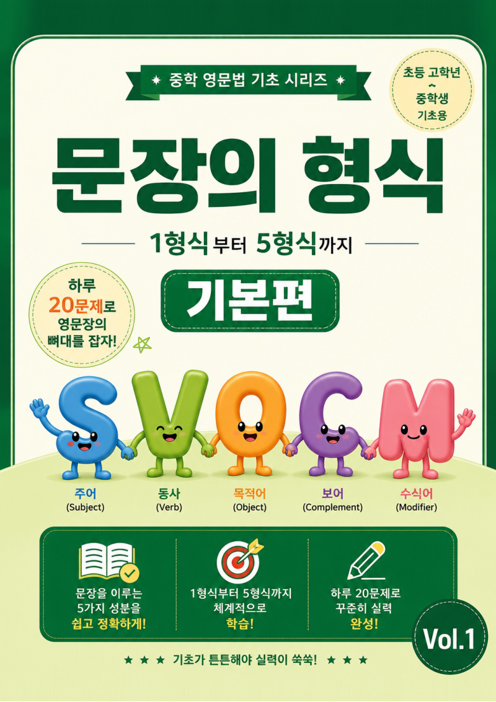
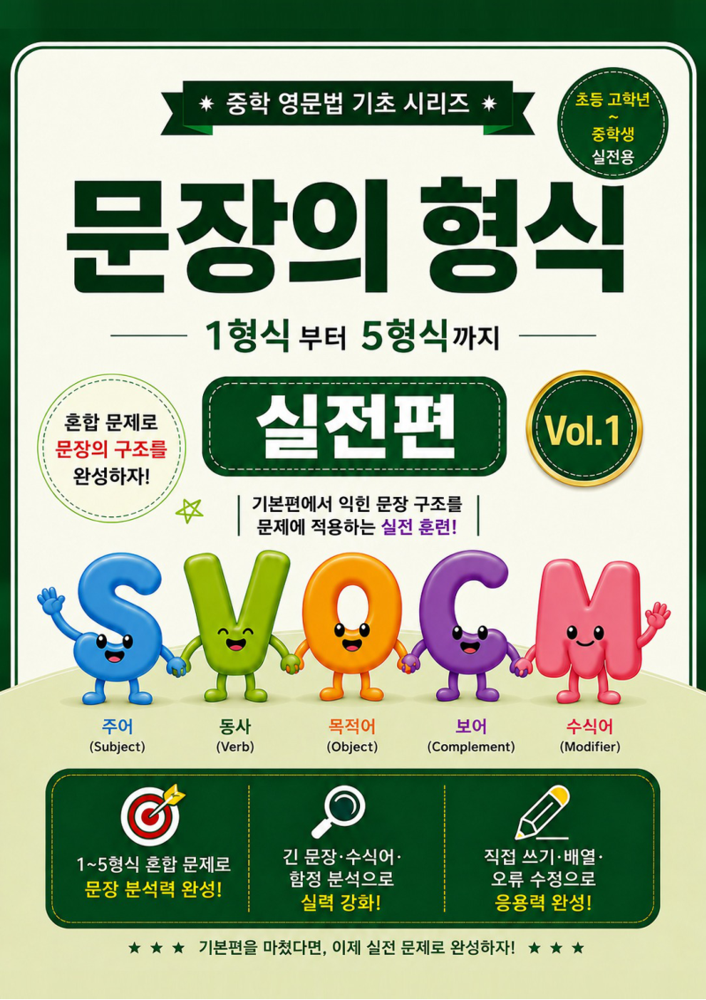
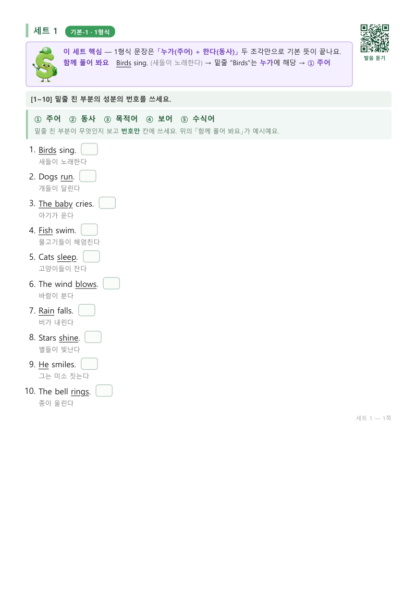
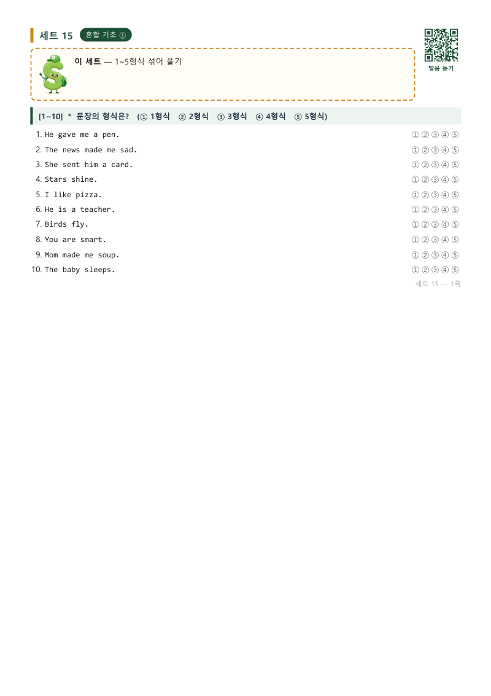

← 홈으로
📘 영문법 학습지 · 중학 영문법 기초 시리즈
문장의 형식(1~5형식) 학습지
— 기본+실전 620문제 PDF
개념 설명 전자책이 아니라, 하루 20문제씩 31일 풀면서 익히는 문제집 2권입니다. 커피값의 5분의 1.
900원
포스타입에서 판매 중
🛒 900원에 구매하기


어려운 용어는 다 뺐습니다
이 책에는 문장의 뼈대(1~5형식) 하나만 남겼습니다. 뼈대를 잡고 나면 나머지 문법은 붙일 자리가 생깁니다.
영어를 아직 못 읽어도 됩니다. 세트마다 QR이 있어서 휴대폰으로 찍으면 그 세트의 모든 문장을 미국식 영어 음성으로 들을 수 있습니다. 회원가입도, 앱 설치도 없습니다. 휴대폰조차 귀찮은 학생을 위해 전 문장 한글 발음 가이드도 부록으로 드립니다.
Vol.1 기본편 — 36쪽, 14세트 280문제
- 형식별로 차근차근: 1형식부터 5형식까지 세트당 20문제
- 1~16번 5지선다 + 17~20번 「혼자서 해보기」(직접 쓰기·배열)
- 전 문항 우리말 해석 수록 — 노베이스도 막히지 않게
- 조사(은/는/을/를)로 성분 찾는 「성분 찾기 치트키」 표
- 학습 진도표 (하루 1세트, 14일 플랜)
Vol.2 실전편 — 45쪽, 17세트 340문제
- 시험처럼 섞어서: 다른 형식 찾기, 함정 동사, 어법 고치기, 긴 문장 분석, 글 속 문장 형식
- 혼합 구별 → 함정 분석 → 응용·어법 → 글 속 적용 4단계
- 정답지에 오답별 원인 해설 수록
- 세트별 성취 기록표 + 유형별 자기 점검표
받으시는 것 (PDF 2권 + 부록, 총 81쪽)
- Vol.1 기본편 + Vol.2 실전편 — 세트 번호가 1~31로 이어져 두 권이 한 권처럼 진행됩니다
- 전 문장 미국식 영어 음성 듣기 (QR) — 700문장 이상, 느리게 듣기 지원, 회원가입·앱 설치 없음
- 별책 부록: 한글 발음 가이드 21쪽 — 휴대폰 없이도 소리 내어 읽을 수 있어요


이런 분께 맞아요
- 영어 문장이 왜 그렇게 배열되는지 모른 채 단어만 외우는 학생
- 1형식~5형식을 배웠는데 문제만 보면 헷갈리는 학생
- 학원·과외 없이 집에서 혼자 풀 교재가 필요한 학부모님
- 대상: 초등 고학년 ~ 중학생 (노베이스 기준으로 집필)
900원인 이유
비싸게 팔 자신이 없어서가 아니라, 많은 학생이 먼저 풀어 보게 하려는 가격입니다. 좋았다면 리뷰 하나만 남겨 주세요. 다음 권을 만드는 힘이 됩니다.
← 홈으로 돌아가기